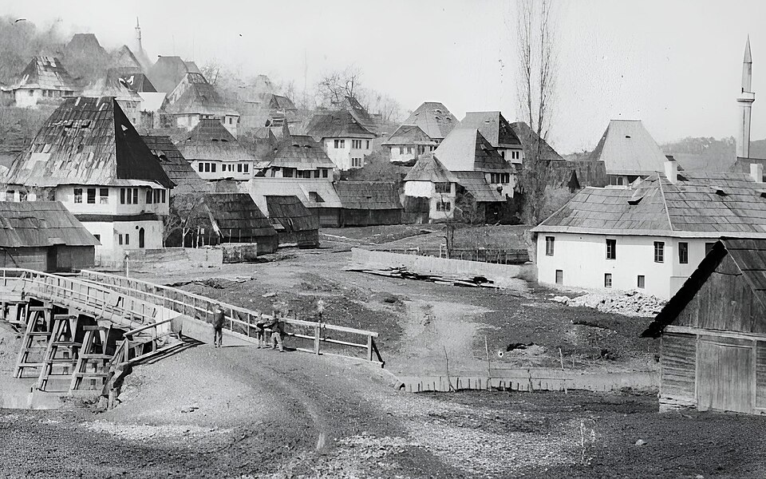
Nastanak Tuzle
Tuzla je jedan od najstarijih gradova u Bosni i Hercegovini, a
njen razvoj kroz historiju usko je povezan sa bogatim
nalazištima soli. Još od antičkog perioda ljudi su se
naseljavali na ovom prostoru upravo zbog slanih izvora koji su
imali veliki značaj za trgovinu i svakodnevni život. Tokom
osmanskog perioda Tuzla se razvijala kao važan trgovački i
zanatski centar, dok je austrougarski period donio modernizaciju
grada i razvoj industrije. Stare gradske jezgre, trgovi i
historijski objekti i danas podsjećaju na bogatu prošlost Tuzle.
Grad je kroz vrijeme postao prepoznatljiv po spoju industrije,
kulture i urbanog života. Brojne historijske priče, arhivski
zapisi i stare fotografije danas čuvaju uspomenu na razvoj Tuzle
kroz različite periode. Upravo zahvaljujući svojoj historiji i
prirodnom bogatstvu, Tuzla je izrasla u jedan od najvažnijih
urbanih centara Bosne i Hercegovine. Stari dio grada i danas
čuva tragove razvoja Tuzle kroz različite epohe i kulturne
uticaje. Historija Tuzle povezana je sa razvojem trgovine,
zanata i industrije koji su oblikovali svakodnevni život
građana. Grad je kroz stoljeća postao simbol spoja tradicije,
industrije i savremenog urbanog razvoja.
Saznaj više
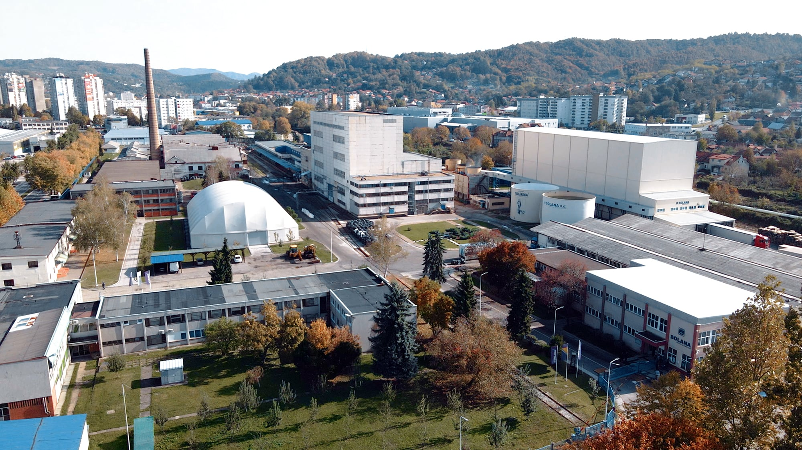
Grad soli
Tuzla je poznata kao grad soli jer je upravo so obilježila njen
razvoj, identitet i historiju kroz stoljeća. Slani izvori
predstavljali su osnovu za razvoj trgovine, zanata i kasnije
industrije po kojoj je grad postao poznat. Solana Tuzla jedan je
od najvažnijih industrijskih simbola grada i direktno je
povezana sa njegovim razvojem. Vađenje soli uticalo je i na
izgled grada, širenje naselja i svakodnevni život stanovnika.
Kroz historiju su mnoge generacije Tuzlaka radile u proizvodnji
soli i gradile industrijsku tradiciju ovog područja. Tuzla je
upravo zahvaljujući soli postala prepoznatljiva širom Bosne i
Hercegovine i regiona. Danas se priča o soli čuva kroz Panonska
jezera, Solanu, muzeje i brojne historijske priče koje
podsjećaju na važnost ovog prirodnog bogatstva za identitet
grada. Industrija soli značajno je uticala na razvoj Tuzle tokom
dvadesetog stoljeća. Mnogi dijelovi grada i danas su povezani sa
historijom proizvodnje soli i radničkog života. Tuzla upravo
zahvaljujući ovoj tradiciji nosi prepoznatljiv naziv grada soli.
Slani izvori i industrija soli ostali su jedan od najvažnijih
simbola historije, razvoja i identiteta Tuzle kroz različite
generacije građana.
Saznaj više
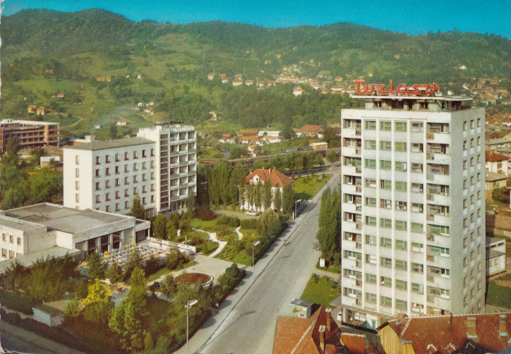
Stara Tuzla
Stara Tuzla predstavlja historijsko jezgro grada i prostor u
kojem se nekada odvijao svakodnevni život građana. U uskim
ulicama stare čaršije nalazile su se zanatske radnje, trgovine i
mjesta okupljanja stanovnika. Ovaj dio grada bio je važan centar
trgovine i društvenog života još u osmanskom periodu. Stare
kuće, čaršijski prostori i gradski trgovi i danas podsjećaju na
izgled nekadašnje Tuzle. Upravo u ovom dijelu grada razvijali su
se zanati, običaji i gradska kultura koja je oblikovala
identitet Tuzlaka. Fotografije i arhivski zapisi danas pomažu da
se sačuva uspomena na staru urbanu Tuzlu i način života
nekadašnjih generacija. Stara čaršija i historijski objekti
predstavljaju važan dio kulturnog naslijeđa grada i njegovog
urbanog identiteta. Ovaj dio Tuzle posebno je poznat po starim
zanatskim radnjama i tradicionalnoj gradskoj atmosferi. Mnogi
građani upravo staru čaršiju smatraju simbolom prošlosti i
urbanog duha Tuzle. Kroz stare ulice i trgove i danas se može
osjetiti dio historije i svakodnevnog života nekadašnje Tuzle. U
staroj Tuzli nalazili su se brojni dućani, kahvane i mjesta na
kojima su se okupljali trgovci i zanatlije iz različitih
dijelova grada.
Saznaj više
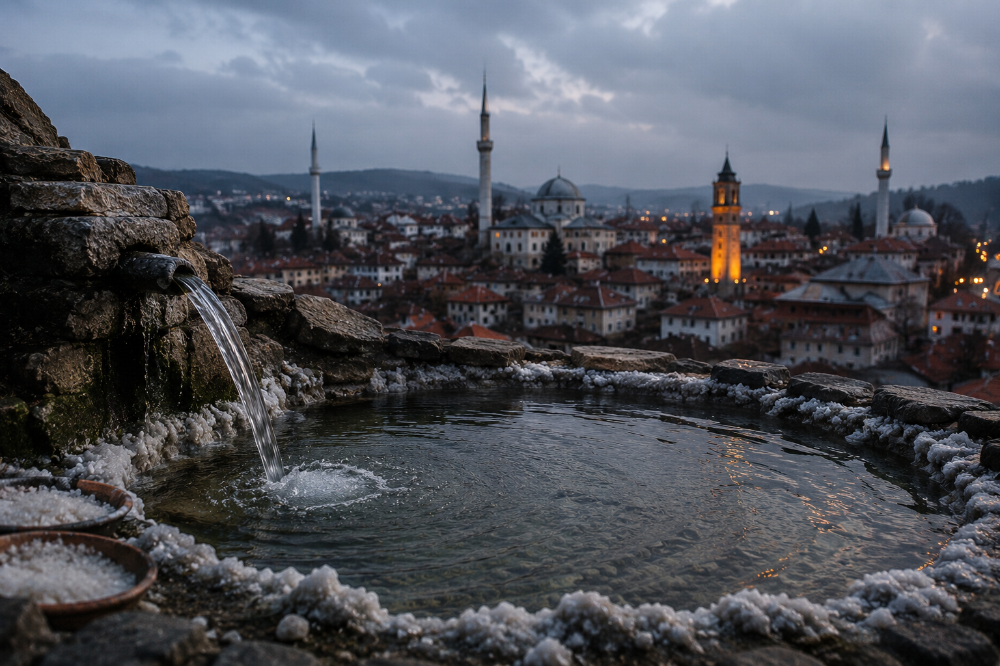
Legenda o slanim izvorima
Legenda o slanim izvorima jedna je od najpoznatijih priča
povezanih sa nastankom Tuzle i njenim identitetom grada soli.
Slani izvori oduvijek su bili važan dio života stanovnika i
razlog razvoja naselja na ovom prostoru. Prema narodnim
predajama, ljudi su slanu vodu doživljavali kao posebno prirodno
bogatstvo i simbol opstanka. Kroz historiju su nastajale brojne
priče o slanim izvorima i njihovom značaju za razvoj grada.
Upravo zahvaljujući soli, Tuzla je postala poznata kao važno
trgovačko i industrijsko središte. Ove legende danas
predstavljaju važan dio kulturnog identiteta Tuzle i često se
povezuju sa pričama o nastanku grada. Slani izvori ostali su
simbol prošlosti, razvoja i prepoznatljivosti Tuzle kroz
različite historijske periode. Mnogi historičari i istraživači
upravo kroz ove priče pokušavaju prikazati važnost soli za
razvoj grada. Legende o slanim izvorima i danas su dio kulturne
tradicije i identiteta Tuzle. Priče o soli ostale su povezane sa
svakodnevnim životom i historijom grada soli.
Saznaj više
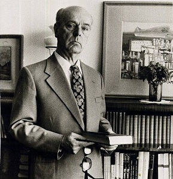
Meša prosvjetar
Ova anegdota je stvarna i Meša ju je sam često spominjao kao
primjer kako ga rodni grad "prizemljuje". Nakon što je objavio
roman "Derviš i smrt" i postao slavan širom Jugoslavije i
Evrope, Meša je došao u Tuzlu. Dok je šetao Korzom, sreo je
starog školskog druga koji ga godinama nije vidio. Prijatelj ga
je potapšao po ramenu i pitao: "Gdje si, Meša, šta ima? Jesi l'
još u onoj prosvjeti, radiš li šta?" U Tuzli niko ne može
postati nedodirljiva zvijezda. Bez obzira na svjetsku slavu, za
svoje sugrađane on je ostao samo onaj isti Meša koji je nekada
radio u školi. To je stvarna slika tuzlanske neposrednosti.
Takve priče i danas se prepričavaju među Tuzlacima kao dokaz da
je ovaj grad uvijek više cijenio čovjeka nego njegovu slavu.
Upravo zbog te jednostavnosti i iskrenosti, Tuzla je ostala
duboko utkana u Mešino sjećanje i književnost. Njegove riječi i
danas podsjećaju koliko su ljudi i uspomene iz rodnog grada
oblikovali njegov pogled na život.
Saznaj više
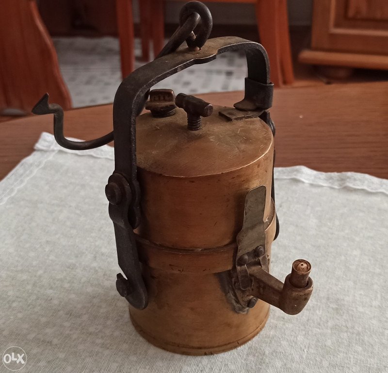
Tuzlanske predaje
Tuzlanske predaje predstavljaju stare priče i usmena sjećanja
koja su se kroz generacije prenosila među stanovnicima grada.
Ove priče govore o starim mahalama, trgovcima, zanatlijama,
običajima i događajima koji su obilježili prošlost Tuzle. Mnoge
predaje povezane su sa slanim izvorima, starom čaršijom i
poznatim gradskim mjestima koja i danas imaju važan značaj za
građane. Kroz ove priče može se osjetiti duh stare urbane Tuzle
i način života nekadašnjih generacija. Predaje predstavljaju
važan dio kulturnog identiteta grada i čuvaju uspomenu na
prošlost Tuzle kroz narodno sjećanje. Fotografije, arhivski
zapisi i historijske priče danas pomažu da se sačuva ovo
vrijedno kulturno naslijeđe grada soli. Mnoge priče vezane su za
svakodnevni život, stare gradske običaje i poznate ličnosti
Tuzle. Tuzlanske predaje i danas predstavljaju važan dio
kulturne tradicije i urbanog identiteta grada. Upravo kroz ove
priče najbolje se može osjetiti duh stare Tuzle.
Saznaj više
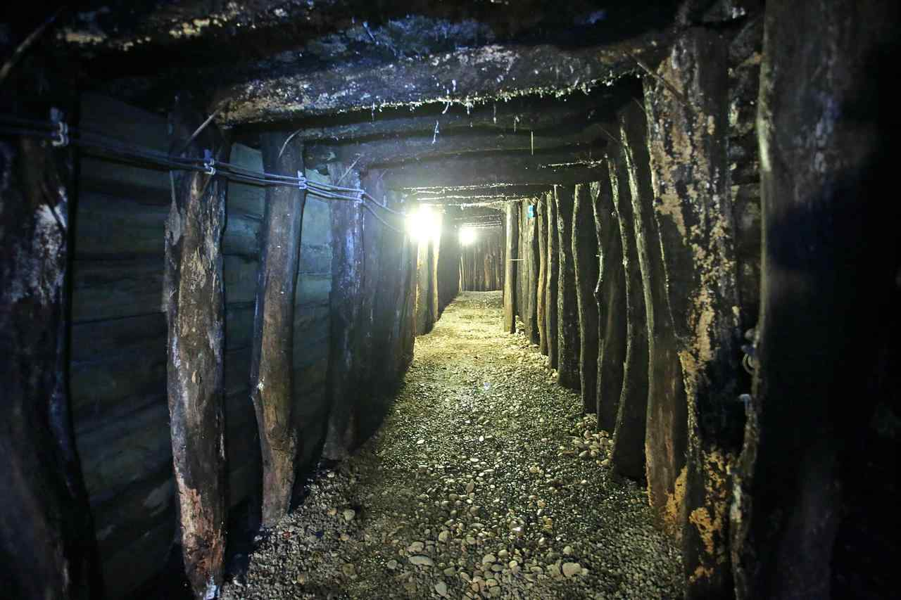
Rudnik Kreka
Rudnik Kreka predstavlja jedan od najvažnijih simbola
industrijske historije Tuzle i okolnog područja. Rudarstvo je
kroz decenije imalo veliki značaj za razvoj grada, industrije i
zapošljavanje stanovništva. Generacije rudara radile su u teškim
uslovima i ostavile snažan trag u identitetu Tuzle. Razvoj
rudnika uticao je na širenje grada, izgradnju radničkih naselja
i razvoj industrijske kulture ovog područja. Rudari su bili
poznati po solidarnosti i snažnom osjećaju zajedništva koji je
obilježio radnički život Tuzle. Danas rudarska tradicija
predstavlja važan dio kolektivnog sjećanja i industrijskog
naslijeđa grada. Fotografije, dokumenti i priče o rudarima i
dalje čuvaju uspomenu na važnost Rudnika Kreka za razvoj Tuzle.
Rudarska naselja i industrijski objekti i danas podsjećaju na
period snažnog razvoja industrije u gradu. Kreka je ostala jedan
od najvažnijih simbola radničke historije i identiteta Tuzle.
Saznaj više
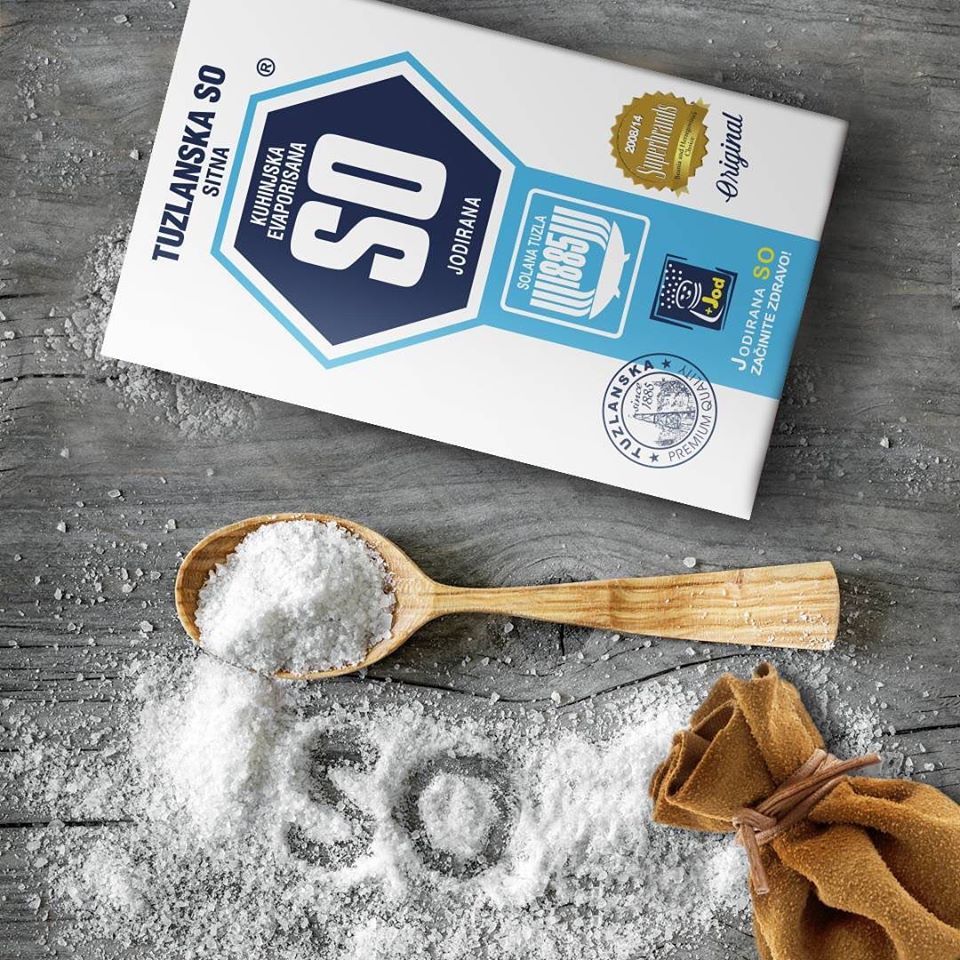
Solana Tuzla
Solana Tuzla jedan je od najpoznatijih industrijskih simbola
grada i direktno je povezana sa njegovim identitetom grada soli.
Proizvodnja soli kroz historiju omogućila je razvoj trgovine,
industrije i urbanog života u Tuzli. Mnogi stanovnici
generacijama su radili u Solani i na taj način učestvovali u
razvoju grada. Industrija soli značajno je uticala na izgled
Tuzle i njeno širenje tokom dvadesetog stoljeća. Solana je
postala simbol rada, industrijske tradicije i ekonomskog razvoja
ovog područja. Danas predstavlja važan dio kulturnog i
industrijskog naslijeđa Tuzle, a priče o proizvodnji soli i
dalje zauzimaju posebno mjesto u historiji grada. Upravo
zahvaljujući Solani Tuzla je postala prepoznatljiva širom Bosne
i Hercegovine i regiona. Brojni industrijski objekti i danas
podsjećaju na važnost proizvodnje soli za razvoj grada. Solana
ostaje jedan od najvažnijih simbola identiteta i industrijske
prošlosti Tuzle.
Saznaj više
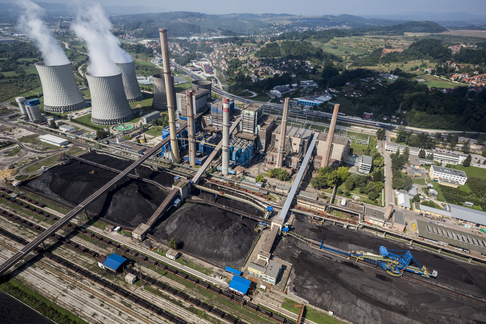
Industrijski razvoj
Industrijski razvoj Tuzle imao je veliki uticaj na izgled grada
i svakodnevni život njegovih stanovnika. Razvoj industrije bio
je povezan sa eksploatacijom soli, uglja i energetskih resursa
koji su omogućili snažan privredni napredak ovog područja.
Fabrike, rudnici i industrijska postrojenja uticali su na
širenje grada i razvoj novih naselja. Tuzla je tokom dvadesetog
stoljeća postala jedan od najvažnijih industrijskih centara
Bosne i Hercegovine. Industrija nije uticala samo na ekonomiju,
nego i na razvoj kulture, sporta i urbanog života građana.
Radnička kultura i osjećaj zajedništva postali su važan dio
identiteta Tuzle. Brojni industrijski objekti i danas
predstavljaju dio historijskog i kulturnog naslijeđa grada.
Fotografije i arhivski zapisi pokazuju koliko je industrija
oblikovala razvoj Tuzle kroz različite periode. Industrijski
razvoj ostao je važan dio identiteta i historije grada soli.
Saznaj više
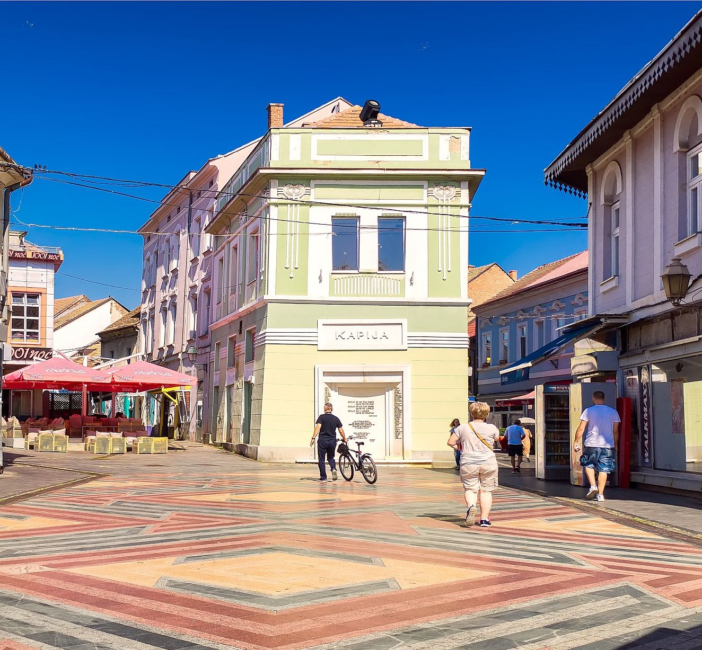
Kapija
Kapija predstavlja jedno od najvažnijih mjesta sjećanja u Tuzli
i simbol je kolektivnog pamćenja grada. Ovo mjesto povezano je
sa tragičnim događajem iz 1995. godine kada je tokom rata
izgubljen veliki broj mladih života. Danas Kapija predstavlja
prostor poštovanja, mira i sjećanja na nevine žrtve. Građani
Tuzle redovno dolaze kako bi odali počast i sačuvali uspomenu na
stradale. Kapija nije samo dio grada, nego mjesto koje nosi
snažnu emocionalnu poruku za sve generacije. Ona podsjeća koliko
su mir i ljudski život važni. Mnogi posjetioci upravo kroz
Kapiju upoznaju i teži dio historije Tuzle. Ovo mjesto postalo
je simbol zajedništva, tuge i borbe za očuvanje sjećanja.
Fotografije, priče i arhivski zapisi pomažu da istina o ovom
događaju ostane trajno sačuvana. Kapija danas predstavlja jedno
od najvažnijih mjesta kulture sjećanja u Bosni i Hercegovini.
Građani Tuzle upravo kroz ovo mjesto čuvaju uspomenu na prošlost
i važnost mira za buduće generacije.
Saznaj više
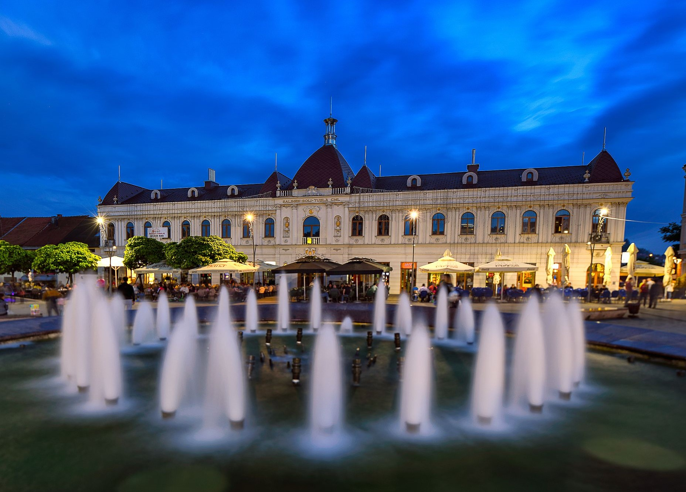
Trg slobode
Trg slobode predstavlja centralno mjesto okupljanja i jedan od
najpoznatijih prostora u Tuzli. Tokom godina postao je simbol
gradskog života, susreta i društvenih događaja. Na trgu se
svakodnevno okupljaju građani i posjetioci koji žele osjetiti
atmosferu grada. Oko njega se nalaze važni objekti,
ugostiteljski prostori i kulturni sadržaji koji mu daju poseban
značaj. Trg slobode često je mjesto održavanja koncerata,
manifestacija i javnih okupljanja. Njegov moderan izgled
pokazuje razvoj savremene Tuzle, ali i dalje čuva duh gradskog
centra. Trg povezuje ljude različitih generacija i predstavlja
važan dio svakodnevnog života. Mnogi ga doživljavaju kao srce
grada i prostor u kojem se najbolje može osjetiti energija
Tuzle. Upravo zbog toga Trg slobode ima posebno mjesto u
identitetu grada. Tokom praznika i kulturnih događaja trg
postaje jedno od najživljih mjesta okupljanja građana i
posjetilaca Tuzle.
Saznaj više
Panonska jezera
Panonska jezera predstavljaju jedan od najpoznatijih simbola
savremene Tuzle i njene turističke ponude. Nastala su kao
jedinstven projekat koji je spojio prirodno naslijeđe i moderan
gradski razvoj. Slana voda u jezerima podsjeća na priču o
Panonskom moru i bogatstvu soli po kojem je Tuzla poznata.
Jezera su postala mjesto odmora, druženja i ljetnih aktivnosti
za građane i turiste. Tokom ljetnih mjeseci privlače veliki broj
posjetilaca iz Bosne i Hercegovine i regiona. Panonska jezera
promijenila su sliku grada i učinila Tuzlu još
prepoznatljivijom. Ona predstavljaju spoj prirode, turizma i
urbanog života. Prostor oko jezera stalno se razvija i postaje
važno mjesto kulturnih i društvenih događaja. Panonska jezera
danas predstavljaju jedan od najvažnijih turističkih prostora i
simbola savremene Tuzle. Jezera su postala važan dio identiteta
grada i svakodnevnog života građana tokom ljetnog perioda.
Saznaj više
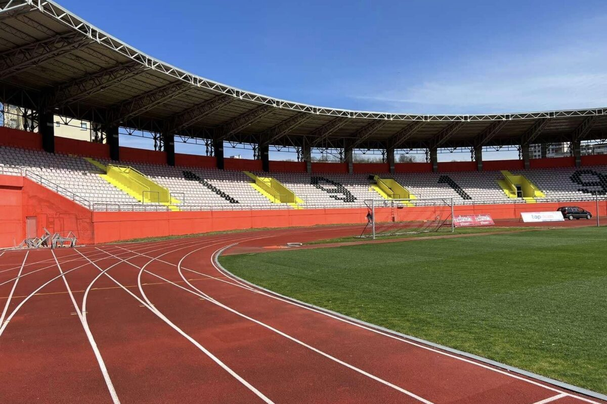
Stadion Tušanj
Stadion Tušanj predstavlja jedno od najvažnijih sportskih mjesta
u Tuzli i dom je FK Sloboda Tuzla. Stadion je kroz historiju bio
mjesto brojnih važnih utakmica, sportskih događaja i okupljanja
navijača iz cijelog grada. Generacije Tuzlaka upravo za Tušanj
vežu svoje sportske uspomene i navijačke trenutke. Stadion se
nalazi u blizini centra grada i predstavlja važan dio sportske
kulture Tuzle. Na Tušnju su igrane utakmice domaćih i
međunarodnih takmičenja, a atmosfera na tribinama često je bila
prepoznatljiva širom Bosne i Hercegovine. Mnogi poznati
fudbaleri upravo su na ovom stadionu započeli ili razvijali
svoje karijere. Tušanj nije samo sportski objekat, nego simbol
zajedništva, navijačke energije i lokalnog ponosa građana Tuzle.
Stadion i danas okuplja veliki broj ljubitelja sporta i ostaje
važan dio svakodnevnog života grada. Kroz svoju dugu historiju
Tušanj je postao jedan od prepoznatljivih simbola sportske
Tuzle.
Saznaj više
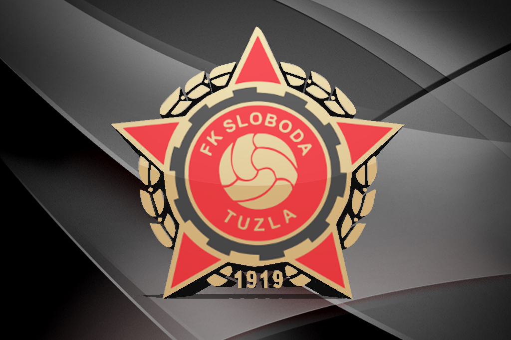
Sloboda Tuzla
FK Sloboda Tuzla jedan je od najpoznatijih i najstarijih
fudbalskih klubova u Bosni i Hercegovini. Klub je osnovan 1919.
godine i kroz decenije je postao važan simbol sportskog
identiteta Tuzle. Sloboda je poznata po velikoj navijačkoj
tradiciji i snažnoj povezanosti sa građanima grada. Tokom svoje
historije klub je igrao brojne važne utakmice i predstavljao
Tuzlu širom bivše Jugoslavije i Bosne i Hercegovine. Crveno-crne
boje kluba postale su prepoznatljiv simbol sportskog duha
Tuzlaka. Mnogi poznati fudbaleri svoje su prve velike uspjehe
ostvarili upravo igrajući za Slobodu. Klub je kroz godine
prolazio kroz uspone i teške periode, ali je ostao važan dio
identiteta grada. Navijači Slobode poznati su po velikoj podršci
i odanosti klubu bez obzira na rezultate. Utakmice Slobode na
stadionu Tušanj predstavljaju važan sportski i društveni događaj
za građane Tuzle. FK Sloboda danas ostaje simbol tradicije,
zajedništva i sportske historije grada.
Saznaj više
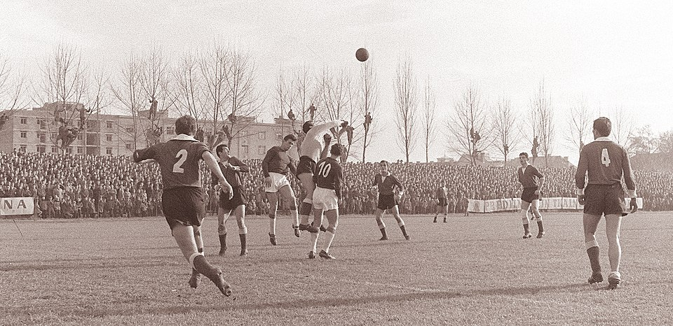
Sport u Tuzli
Sport u Tuzli ima veliku tradiciju i važan je dio identiteta
grada. Stadion Tušanj predstavlja dom FK Sloboda Tuzla, jednog
od najstarijih fudbalskih klubova u Bosni i Hercegovini.
Sportsko-kulturni centar Mejdan poznat je po rukometnim,
košarkaškim i odbojkaškim utakmicama koje okupljaju veliki broj
građana. Tuzla je poznata po klubovima kao što su FK Sloboda, RK
Sloboda, KK Sloboda i OK Sloboda. Navijačka kultura i podrška
lokalnim klubovima važan su dio sportske atmosfere grada. Sport
je kroz godine postao simbol zajedništva, energije i ponosa
Tuzlaka. Brojni mladi sportisti upravo u Tuzli započinju svoje
prve sportske korake kroz škole sporta i omladinske klubove.
Sportski događaji i utakmice i danas predstavljaju važan dio
društvenog života grada. Tuzla je kroz sport razvila snažnu
navijačku tradiciju i posebnu povezanost građana sa lokalnim
klubovima. Mejdan i Tušanj ostali su mjesta važnih sportskih
uspomena i velikih okupljanja navijača.
Saznaj više
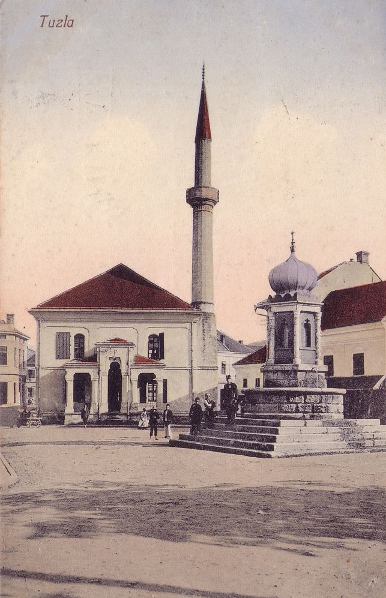
Stara čaršija
Stara čaršija predstavlja jedan od najvažnijih historijskih
dijelova Tuzle i prostor u kojem se nekada odvijao svakodnevni
život grada. U čaršiji su se nalazile zanatske radnje, trgovine
i mjesta okupljanja stanovnika. Ovaj dio Tuzle bio je centar
trgovine i društvenog života još u osmanskom periodu. Uske
ulice, stare kuće i tradicionalni objekti i danas podsjećaju na
izgled nekadašnjeg grada. Čaršija čuva duh stare Tuzle i priče
generacija koje su tu živjele i radile. Ona predstavlja važan
dio kulturnog i urbanog identiteta Tuzle. Mnogi stari zanati i
običaji upravo su se razvijali u ovom dijelu grada. Fotografije
i arhivski zapisi danas pomažu da se sačuva uspomena na izgled i
atmosferu stare čaršije. Ovaj dio grada posebno je važan za
očuvanje historijskog identiteta Tuzle. Stara čaršija povezuje
prošlost i sadašnjost kroz arhitekturu, priče i gradske običaje.
Mnogi građani upravo ovaj prostor smatraju simbolom stare urbane
Tuzle.
Saznaj više
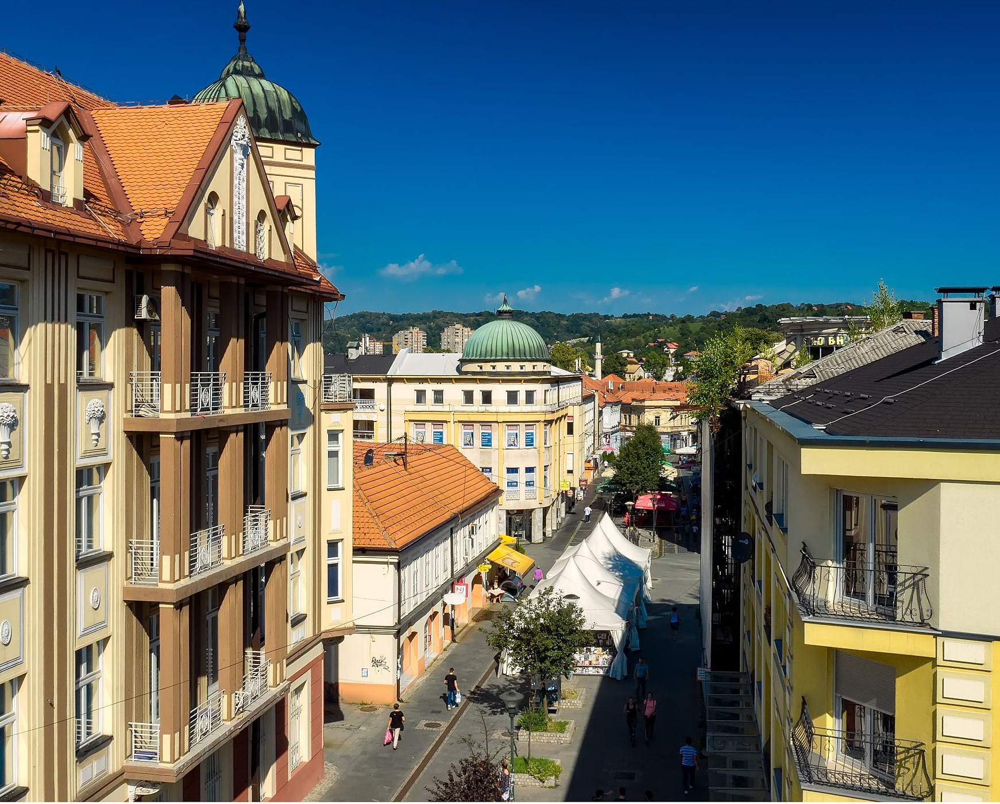
Arhitektura Tuzle
Arhitektura Tuzle pokazuje spoj osmanskog, austrougarskog i
savremenog perioda razvoja grada. U Tuzli se mogu vidjeti stari
trgovi, austrougarske zgrade, industrijski objekti i moderni
gradski prostori koji zajedno stvaraju poseban izgled grada.
Panonska jezera, Trg slobode i stara čaršija predstavljaju neke
od najprepoznatljivijih urbanih prostora Tuzle. Industrijski
razvoj i vađenje soli značajno su uticali na izgled grada i
njegovo širenje. Arhitektura Tuzle pokazuje kako su se kroz
historiju mijenjale potrebe i način života građana. Upravo ta
kombinacija starog i modernog daje Tuzli prepoznatljiv
identitet. Mnogi objekti danas predstavljaju važan dio kulturnog
naslijeđa grada. Kroz stare fotografije i arhivsku građu moguće
je pratiti kako se Tuzla mijenjala kroz različite historijske
periode. Austrougarski objekti i stare gradske građevine i danas
imaju važnu ulogu u vizuelnom identitetu Tuzle. Razvoj
industrije ostavio je trag i na urbanom širenju grada tokom
dvadesetog stoljeća. Savremeni dijelovi Tuzle danas se povezuju
sa historijskim jezgrom i stvaraju spoj tradicije i modernog
urbanog razvoja.
Saznaj više
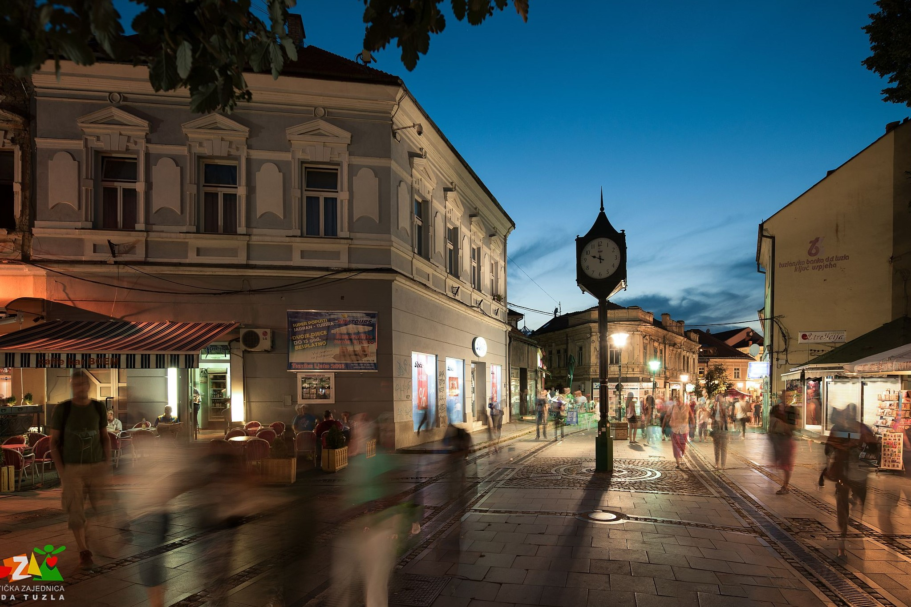
Gradske ulice
Gradske ulice Tuzle čuvaju tragove razvoja grada kroz različite
historijske periode. Ulice oko stare čaršije i centra grada
podsjećaju na vrijeme kada je Tuzla bila važan trgovački i
zanatski centar. Kroz grad se mogu vidjeti spojeni uticaji
starog urbanog jezgra i savremenog razvoja. Korzo i centralni
gradski prostori predstavljaju mjesta okupljanja građana i dio
svakodnevnog života Tuzlaka. Mnoge ulice povezane su sa pričama
o industriji, soli i razvoju grada kroz dvadeseto stoljeće.
Upravo kroz gradske ulice najbolje se može osjetiti ritam,
historija i identitet Tuzle kao grada soli. Stare i nove gradske
četvrti zajedno pokazuju kako se Tuzla širila i razvijala kroz
godine. Fotografije gradskih ulica danas predstavljaju važan dio
arhivskog naslijeđa i kolektivnog sjećanja građana. Korzo je
posebno poznat kao mjesto šetnje, susreta i svakodnevnog
gradskog života. Ulice Tuzle povezuju historijske, kulturne i
moderne dijelove grada u jedinstvenu urbanu cjelinu. Kroz
njihove promjene može se pratiti razvoj Tuzle od industrijskog
do savremenog grada.
Saznaj više